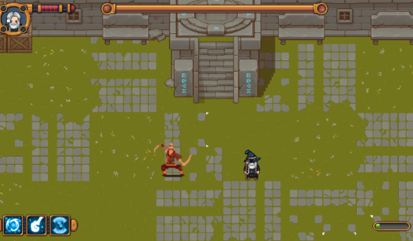
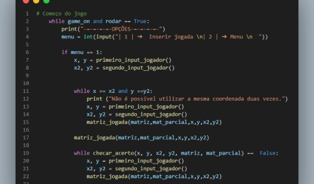
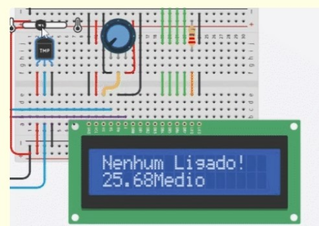
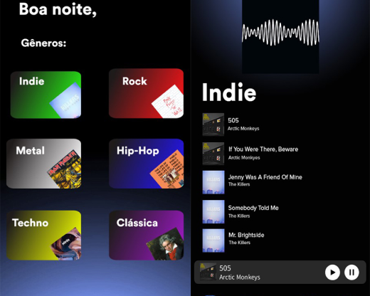

Olá! Meu nome é Alexandre Faisst.
Engenheiro de Software em formação e estudante de Ciência da Computação na PUCPR. Esse site é uma coleção visual dos projetos elaborados na faculdade.

Curse of the Four Elements

Jogo da memória
Projeto Smart City


Player de Música
Jogo desenvolvido na engine Construct 2 para a matéria de experiência criativa. O jogo é um top-down shooter com elementos de fantasia, onde o protagonista deve derrotar os chefes para libertar o seu povo.
Jogo desenvolvido em Python para a matéria de raciocínio algorítmico. Nele, o jogador deve acertar os pares das letras gerados aleatoriamente dentro da matriz, tendo a chance de ver o tabuleiro 2 vezes a cada partida.
Player de música desenvolvido para a matéria de experiência criativa utilizando Processing 4 e Java. O programa conta com recursos responsivos ao passar o mouse, display das ondas sonoras e gifs animados na capa das playlists.
Projeto para a matéria de Sistemas Ciberfísicos utilizando Arduino e C++. Como o projeto deveria ser voltado para a área de Smart City, desenvolvemos um detector de temperatura que liga e desliga o ar-condicionado automaticamente.